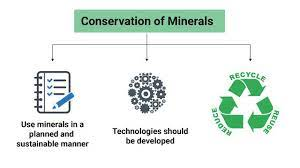

Conservation Of Minerals
==> We all appreciate the strong dependence of
industry and agriculture upon mineral
deposits and the substances manufactured
from them.
=>The total volume of workable
mineral deposits is an insignificant fraction
i.e. one per cent of the earth’s crust. We are
rapidly consuming mineral resources that
required millions of years to be created and
concentrated.
==>The geological processes of
mineral formation are so slow that the rates
of replenishment are infinitely small in
comparison to the present rates of
consumption.
==>Mineral resources are,
therefore, finite and non-renewable. Rich
mineral deposits are our country’s extremely
valuable but short-lived possessions.
==>Continued extraction of ores leads to
increasing costs as mineral extraction comes
from greater depths along with decrease
in quality.
==>A concerted effort has to be made in order
to use our mineral resources in a planned
and sustainable manner.
==>Improved
technologies need to be constantly evolved to
allow use of low grade ores at low costs.
Recycling of metals, using scrap metals and
other substitutes are steps in conserving our
mineral resources for the future.
